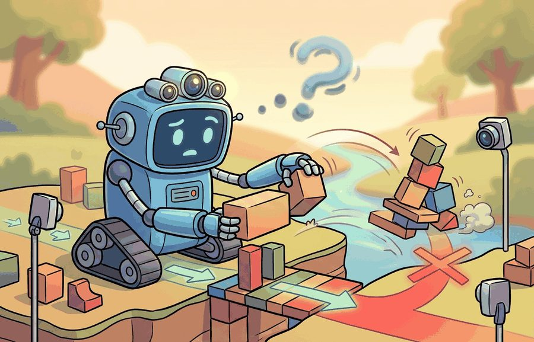
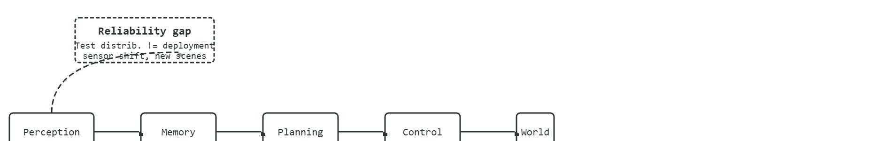

"I can solve the task once. Reliability is the part where the task notices."
A Long-Horizon Policy After Minute Twelve

This section builds on the long-horizon task framing introduced in section 51.3 and the reliability failure taxonomy from section 53.1. Readers who want concrete safety mechanisms to address the reliability gap should continue to section 54.2 (constraint violations and safe exploration) and section 54.4 (shielded policies and safety filters), where the open problems named here are treated as design targets.
A household robot completes a kitchen-tidying task flawlessly in the lab, then fails on the same kitchen twenty minutes later when a child moves a chair. That gap, between a policy that works once and a system that works reliably, is the defining unsolved problem of embodied AI right now. Three structural cracks explain it: long-horizon reasoning assumes that good local decisions compose into a good global trajectory (they rarely do), reliability assumes that held-out test performance predicts deployment (it does not), and real-world RL (reinforcement learning run on physical hardware rather than in simulation) assumes that hardware interactions are cheap (they are not). Figure 58.5A previews these three challenges as a single map before we examine each in turn. The goal is to name the failure mode precisely, trace it to its structural cause, and evaluate whether a proposed fix genuinely closes the gap or merely defers it.
A common assumption is that a robot achieving 85-90% success on short benchmark tasks means these problems are nearly solved and only incremental engineering remains. This is wrong in the embodied AI context because short-episode success does not compose: each small error in a long-horizon task compounds rather than cancels, so a policy that succeeds 90% of the time on 5-minute trials may succeed 0% of the time on a 20-minute real-world deployment where memory decays, sensor conditions shift, and no human reset is available. The correct mental model treats reliability as a curve over deployment horizon, not a single percentage: the open problems named in this section are structural gaps in how learning systems handle time, distribution shift, and physical sample cost, not just accuracy shortfalls that a larger model will automatically close.
A policy that nails a grasp 97 times out of 100 sounds nearly solved, yet chain forty of those grasps into one twenty-minute task and the same policy succeeds barely three times out of ten: that collapse, hiding in plain sight behind an impressive single-step number, is the territory this section maps. To make it usable we define the object of study, connect it to the agent loop, then test it with a compact implementation.
These three problems persist not because researchers have ignored them but because each one attacks a different structural assumption that most learning pipelines take for granted. Long-horizon reasoning breaks the assumption that a good local policy composes into a good global trajectory. Reliability breaks the assumption that a held-out test set predicts deployment performance. Real-world RL (reinforcement learning) breaks the assumption that the number of training interactions is cheap. A household robot asked to tidy a kitchen, retrieve a specific medication, and then report back has to handle all three simultaneously: it must commit to a multi-step plan, stay safe around humans and fragile objects, and do so after only hours of on-hardware experience rather than millions of simulated steps. The diagram below locates each of the three gaps on the agent pipeline, showing exactly which inter-module link each one breaks.

The key question in What is still unsolved (long-horizon reasoning, reliability, real-world RL) is practical: what must the agent know, what can it observe, what action is available, and what evidence shows that the action worked under the stated conditions?
Unsolved reliability problems should be judged by the action it improves. A section claim is strong when it names the decision, the measurement, and the failure mode before a larger model or simulator is introduced.
Each of the three open problems attacks a different physical bottleneck. Long-horizon reasoning fails when subgoal memory decays faster than the task horizon. A Transformer-based policy such as RT-2 has a fixed context window. A kitchen-tidying task spanning twelve minutes and forty robot-steps silently drops the earliest observations. The robot then re-grasps objects it already placed or re-enters a room it already cleared. Re-grasping wastes irreversible time, risks collision with placed objects, and erodes the trust of any human co-worker. Unlike a silent software patch, a redundant physical action leaves a visible trace in the world. The compounding mechanism is direct: each dropped observation removes a constraint. Without memory that a cup is stowed, the agent treats the cup as unconstrained. Its value function assigns positive utility to grasping the cup again, producing a locally correct but globally redundant action at every subsequent step.
If memory decay corrupts what the agent remembers about its own past actions, the next bottleneck corrupts what the agent perceives about a world that has quietly moved on from the training set.
Reliability fails when the held-out test distribution does not capture deployment distribution shift. A policy trained in one kitchen typically generalises poorly in three common cases. A chair moves 30 cm. New lighting pushes RGB values outside the training range. A human body partially occludes a target object. Real-world RL fails because on-hardware episodes cost far more than simulated ones. Every Franka Panda grasp that ends in a drop risks joint-torque overload, finger wear, and an operator reset that costs two to five minutes of wall-clock time. That expense typically shrinks the effective sample budget by an order of magnitude or more below the millions of steps that sim-only benchmarks assume, though the exact factor depends on the task and hardware. A sim policy trains on 50,000 rollouts overnight at zero cost, while a real manipulator might safely complete 300 episodes before cumulative joint wear triggers a maintenance stop. A policy that works in simulation but fails on hardware is not a deployed policy; it is a hypothesis waiting for a robot to test it.
So far: long-horizon reasoning fails through memory decay (dropped early steps produce redundant actions), reliability fails through distribution shift at the sensor boundary (the deployed scene differs from the training scene), and real-world RL fails through the high physical cost of each hardware episode (drops, resets, and wear shrink the usable sample budget); the next callout traces each of these three failures to the specific link it breaks in the agent's perception-memory-planning-control-world loop.
Long-horizon failure is a memory and credit-assignment problem (credit assignment: figuring out which of many earlier actions deserves the credit or blame for a later outcome): the reward signal for step 1 of a 40-step task does not arrive until step 40, so gradient flow through a policy gradient or Q-function update (the two standard families of reinforcement-learning update rules) is sparse and delayed. Reliability failure is a covariate-shift problem (covariate shift: the input distribution seen at deployment differs from the one seen during training, even though the task itself is unchanged) at the sensor boundary: a depth camera such as the Intel RealSense D435 returns NaN patches on reflective surfaces, and a policy that was never trained on those patches propagates a corrupted point cloud through its entire planning stack. Real-world RL failure is a physical-cost problem: sample efficiency in sim-to-real transfer typically drops by roughly one to three orders of magnitude when moving from MuJoCo rollouts to hardware because contact dynamics in simulation do not match measured friction and compliance on the real manipulator, so many sim-learned skills require on-hardware fine-tuning before they are deployable, each fine-tuning step incurring mechanical wear and safety-stop risk.
Consider a mobile manipulator asked to retrieve a specific medication from a cabinet and bring it to a person seated in an adjacent room. At minute zero, the task plan is correct. At minute four, a door swings shut and the robot's occupancy map goes stale. At minute eight, the medication bottle is partially occluded by another object. At minute eleven, the robot must recover from a failed grasp without any reward signal having been received yet. Each minute exposes a different failure: localization drift, sensor occlusion, and sparse delayed reward are all active simultaneously. A policy that scores 90% success on isolated 90-second pick-and-place trials in simulation may complete this task 0% of the time on first deployment, because none of the three failure modes appear in a 90-second sim episode.
For What is still unsolved (long-horizon reasoning, reliability, real-world RL), keep the small contract as the inspectable interface, then use OpenVLA, SmolVLA, GR00T, Gemini Robotics, or pi-zero-family tools without changing logging or replay fields.
The common mistake in What is still unsolved (long-horizon reasoning, reliability, real-world RL) is to trust a component score before checking the closed-loop interface. The failure usually appears where state, timing, authority, or evaluation context crosses a module boundary.
The 2024 SERL effort at UC Berkeley (Luo et al.) makes the discipline concrete on a Franka Panda doing PCB-connector insertion: rather than reaching for the largest VLA, the team fixes the task panel (image plus proprioception observation, 7-DoF delta-pose action where the policy commands a small incremental change to the arm's seven degrees of freedom rather than an absolute target, insertion-depth success metric) and runs a behavior-cloning baseline (where behavior cloning is supervised imitation of recorded expert actions), an RLPD on-hardware run (where RLPD, reinforcement learning with prior data, mixes offline demonstrations into an online replay buffer), and a perturbed-fixture run, all logging to one buffer. The on-hardware policy reaches near-100% insertion in roughly 20 to 30 minutes of real interaction precisely because every reset, safety stop, and reward is written by the same script. A separate "bigger model" demo with no shared intervention log would not have exposed that the connector tolerance, not policy capacity, was the binding constraint.
Amazon Robotics deploys its Sparrow and Stow manipulation systems alongside thousands of mobile drive units, and the binding constraint is exactly the reliability-over-horizon problem: a per-pick accuracy that looks fine in isolation must hold across millions of consecutive picks per day, so the systems lean on confidence-gated handoff to human associates rather than trusting end-to-end autonomy. The same compounding-error logic that limits a 20-minute household task governs whether a fulfillment cell can run an 8-hour shift unattended.
When what is still unsolved (long-horizon reasoning, reliability, real-world rl) feels abstract, ask what would be different in the next frame of video, the next robot state, or the next safety margin.
For What is still unsolved (long-horizon reasoning, reliability, real-world RL), the open research question is not whether a larger policy can produce a better demo. The sharper question is whether the method improves reliability across new scenes, new embodiments, delayed feedback, and rare failures under an evaluation protocol that another lab can reproduce.
For What is still unsolved (long-horizon reasoning, reliability, real-world RL), can you name the observation, action, protected assumption, success metric, and one likely failure case? If any field is vague, rewrite the contract before adding model complexity.
This section names the failures that still separate strong demos from dependable embodied systems. Long-horizon reasoning, reliability under shift, and real-world reinforcement learning remain difficult because they require the agent to preserve credit assignment, memory, safety, and calibration over many interacting decisions.
Turn each broad complaint into a measurable failure mode. Do not say robots struggle with long horizons; name the cause: memory decay, cumulative localization drift, mistaken subgoal commitment, or reward sparsity.
What is still unsolved (long-horizon reasoning, reliability, real-world RL) becomes teachable once the student can state the operative variables, the decision boundary, and the evidence artifact. The section should therefore be read together with Chapter 45 on locomotion reliability and Chapter 54 on safety, where the same loop is developed from adjacent angles.
Reliability over a deployment horizon $H$ can be summarized as $R(H)=\Pr(\text{task success and no safety violation for all } t\le H)$. This is stricter than average success because a policy that succeeds 90 percent of short episodes may still have a poor $R(H)$ once failures compound across time.
RT-2 (Brohan et al., 2023) demonstrated strong single-step instruction following but required human resets every few steps in multi-stage tasks, exposing the long-horizon gap directly. SayCan (Ahn et al., 2022) decomposed tasks into short subgoals and achieved 74% success on 101 real-world kitchen tasks, yet success dropped sharply when object placements deviated from training distribution, illustrating the reliability gap. On real-world RL, the work behind ALOHA (Zhao et al., 2023) reported that imitation-initialized policies needed roughly 50 on-hardware fine-tuning episodes to recover from novel failure modes, each episode costing physical wear and operator time. These numbers make the problems concrete: it is not that systems fail completely, it is that they fail in predictable ways that each map to one of the three open dimensions.
The difference between success rate and reliability is temporal composition under real conditions: a system that succeeds on 84% of 5-minute episodes may succeed on only 33% of 20-minute episodes running the same policy, because each small error compounds rather than cancels. A system can be good at isolated moves and still bad at staying good for twenty minutes, across new homes, with intermittent sensing, or after one awkward recovery step.
Think of a long sea kayak crossing where each stroke introduces a tiny heading error. On a five-minute paddle the drift is invisible. On a four-hour crossing the same uncorrected 2-degree error each stroke places you a kilometre off target, even though every individual stroke looked fine. Long-horizon reliability works the same way: the policy does not get worse step by step, the geometry of compounding does. The only fix is periodic absolute-position checks (replanning from world state), not better individual strokes.
Because that compounding geometry is invisible in any single episode, the only way to expose it is to measure deliberately across horizons, which is what the following panel operationalizes.
| Dimension | What To Specify | Why It Matters |
|---|---|---|
| Long-horizon reasoning | Subgoal persistence, memory freshness, recovery after interruption | Task completion over long episodes with error decomposition. |
| Reliability | Repeatability across homes, tools, and human variation | Reliability curve plus safety-intervention rate. |
| Real-world RL | On-hardware sample efficiency and safe exploration | Improvement per interaction hour and incident count. |
| Evidence artifact | Failure-labeled replay suite and reliability ledger | Turns vague frontier talk into actionable experiments. |
def validate_ledger(payload: dict[str, object]) -> dict[str, object]:
assert payload, "payload must not be empty"
return payload
# Reliability ledger for an open-problem study.
ledger = {
"episode_minutes": [5, 10, 20],
"reliability": [0.84, 0.61, 0.33],
"dominant_failure": "memory stale after interrupted subgoal",
"interventions_per_hour": 2.4,
}
print(validate_ledger(ledger)){'episode_minutes': [5, 10, 20], 'reliability': [0.84, 0.61, 0.33], 'dominant_failure': 'memory stale after interrupted subgoal', 'interventions_per_hour': 2.4}Trace how short-episode success collapses over a long horizon with a tiny concrete model. Assume each independent decision step succeeds with probability $p=0.97$ and the task needs every step to succeed (no recovery). A 5-minute episode is 10 steps, a 10-minute episode is 20 steps, a 20-minute episode is 40 steps. Step 1: $R(10)=0.97^{10}=0.737$. Step 2: $R(20)=0.97^{20}=0.544$. Step 3: $R(40)=0.97^{40}=0.296$. So a per-step accuracy of 97 percent (which sounds excellent) yields only about 30 percent reliability at 40 steps. Now flip it: to hit $R(40)=0.84$ you need $p=0.84^{1/40}=0.9956$, that is 99.56 percent per step. The lesson in numbers: pushing a benchmark from 97 to 99.56 percent looks like a tiny 2.5-point gain, yet it is the entire difference between a 30 percent and an 84 percent long-horizon system. This is why the ledger in Code Fragment 58.5.A reports reliability as a curve over horizon rather than one aggregate score.
The expected output should show degradation with horizon, not just one aggregate success score. That degradation curve is the point: it tells the researcher where the loop stops being dependable.
When building a reliability ledger like the one above, always log interventions_per_hour as a first-class field alongside task success. Many real-world RL papers report only successful-episode counts, which makes a policy that needed 400 physical attempts look equivalent to one that needed 200; the intervention rate exposes that difference immediately. In CleanRL or LeRobot experiment scripts, add a single counter incremented on every safety stop or operator reset and write it to the same JSON artifact as your reward curve so the two stay coupled and comparable across runs.
After the from-scratch contract is clear, the practical route uses LeRobot, OpenVLA, ROS 2 logging, Dreamer-style planners, CleanRL, safety monitors, hardware replay tools. The payoff is that standard interfaces, logging, batching, and replay support move from ad hoc glue code into maintained infrastructure, while the evidence schema stays the same.
A semester team can study reliability without expensive hardware by injecting interruptions, stale maps, and delayed observations in simulation, then tracing which subsystems fail first. The deliverable should be a replay suite and a ledger, not only a discussion paragraph.
Real-world RL experiments often underreport the true sample cost by counting only successful learning episodes and omitting the failed or aborted ones that caused hardware wear, required operator resets, or triggered safety stops. A policy that appears to converge in 200 episodes may have required 400 physical attempts once resets and safety interventions are counted. This makes cross-paper comparisons of "sample efficiency" almost meaningless unless the intervention protocol and reset cost are explicitly logged and reported alongside task success.
Direction 1: Scalable long-context memory for manipulation. Transformer policies with fixed context windows silently truncate early task steps, causing redundant or contradictory actions in tasks that exceed a few minutes. The 2024 work on Gemini Robotics (Google DeepMind, 2025) and RoboVLMs surveys show that vision-language policies still fail on tasks requiring retrieval of events more than 30 steps back. Active research targets external memory banks and hierarchical subgoal representations that persist across resets without growing context cost quadratically.
Direction 2: Safe real-world reinforcement learning with minimal hardware cost. RLIF (reinforcement learning from interventions) frameworks such as SERL (Sample-Efficient Robot Learning; Luo et al., 2024, UC Berkeley) demonstrate that on-hardware RL can converge in tens of episodes when paired with intervention-triggered resets and residual policy architectures, reducing mechanical wear by an order of magnitude versus naive policy-gradient rollouts. The open question is whether these methods transfer across embodiments without per-robot safety tuning.
Direction 3: Distribution-shift certification for deployed manipulation policies. Work on conformal prediction (a distribution-free method that wraps any predictor with a calibrated set guaranteed to contain the true answer at a chosen probability) applied to robot perception (Angelopoulos et al., ongoing at UC Berkeley) offers coverage guarantees on out-of-distribution inputs, but current methods assume exchangeable calibration data (exchangeable: each calibration example is statistically interchangeable with the others, so their order carries no information), which is violated by sequential physical tasks where each grasp changes the scene state.
Open PhD-scale problem: Design an evaluation protocol and benchmark that jointly measures memory fidelity, recovery rate, and hardware sample cost across at least three embodiments and three household task categories, using intervention logs as first-class evidence rather than aggregate episode success. As of 2025, no current benchmark (LIBERO, Open X-Embodiment, RoboSuite) tracks all three dimensions in a single reproducible artifact.
For What is still unsolved (long-horizon reasoning, reliability, real-world RL), the printed artifact should identify the open technical uncertainty, the evidence already available, and the next experiment or design review that would make the frontier claim testable.
Beginner (weekend): Reliability degradation logger in Gymnasium. Build a Gymnasium wrapper around a standard locomotion environment (such as HalfCheetah or Ant) that injects random observation noise at a configurable rate, then plot task-success rate against episode length to produce a reliability curve like the one discussed above. The key challenge is separating noise-induced failure from policy weakness without access to a ground-truth state oracle.
Intermediate (1 to 2 weeks): Long-horizon task monitor with replanning in Isaac Lab or PyBullet. Implement a tabletop manipulation task (pick, stack, and sort three objects) in Isaac Lab or PyBullet where the agent must complete all three stages in sequence, and add a subgoal-staleness detector that triggers a replanner when the memory buffer drops a completed subgoal. The key challenge is designing a lightweight memory representation that survives the full task horizon without requiring a fixed-length context window that silently truncates early steps.
Intermediate (1 to 2 weeks): On-hardware sample-cost tracker for LeRobot. Extend a LeRobot training script for a real or simulated SO-100 arm to log every episode attempt including aborted runs and safety stops alongside the standard reward curve, then compare reported sample efficiency with and without the aborted episodes to quantify how much conventional reporting underestimates true hardware cost. The key challenge is instrumenting the safety-stop callback so that partial episodes are recorded in the same artifact as successful ones rather than silently discarded.
Goal (15 to 30 min): Reproduce empirically the claim that short-episode success does not predict long-horizon reliability, and produce your own $R(H)$ curve. Tools: Python, Gymnasium, and Stable-Baselines3 (pip install gymnasium stable-baselines3). Use a quick-to-train environment such as CartPole-v1 or a short PPO run on LunarLander-v2. Setup: Train a policy briefly so it is good but imperfect (deliberately undertrain, for example 50k PPO steps), then evaluate it on episodes truncated at increasing maximum lengths $H \in \{20, 50, 100, 200, 400\}$ steps, counting an episode as a success only if it survives the full horizon without termination. What to vary: the truncation horizon $H$, and separately the training budget (50k vs 200k steps) to see how the curve shifts. What to observe: plot success rate against $H$ on a log-x axis; you should see a roughly geometric decay (as derived in the Step-Through above), and you should find that a small per-step accuracy improvement from more training shifts the long-horizon tail far more than the short-horizon head. Confirm whether your measured per-step success $p$ predicts $R(H) \approx p^{H}$, and note where it deviates (recovery dynamics break the no-recovery assumption).
Design a method-matched experiment for What is still unsolved (long-horizon reasoning, reliability, real-world RL). Specify the environment, observation schema, action interface, metric, and one perturbation that targets the section's core assumption.
Bardes, A. et al. Revisiting Feature Prediction for Learning Visual Representations from Video. arXiv, 2024.
Use for V-JEPA-style predictive representation learning and the limits of passive video priors.
Open X-Embodiment Collaboration. Open X-Embodiment: Robotic Learning Datasets and RT-X Models. arXiv, 2023.
Use for cross-embodiment data scaling, RT-X evaluation, and dataset-standardization claims.
Next, continue with Frontier Watch, where this frontier question is connected to a different research bottleneck.